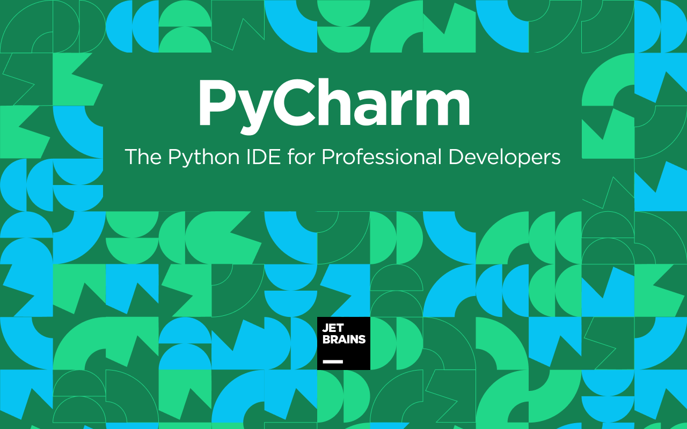

PyCharm

PyCharm делает разработку максимально продуктивной благодаря функциям автодополнения и анализа кода, мгновенной подсветке ошибок и быстрым исправлениям. Автоматические рефакторинги помогают эффективно редактировать код, а удобная навигация позволяет мгновенно перемещаться по проекту.
PyCharm предлагает большой набор инструментов из коробки: встроенный отладчик и инструмент запуска тестов, профилировщик Python, полнофункциональный встроенный терминал, инструменты для работы с базами данных.
IDE интегрирована с популярными системами контроля версий, содержит встроенный SSH-терминал, поддерживает возможности удаленной разработки и удаленные интерпретаторы, а также интеграцию с Docker и Vagrant.
PyCharm предоставляет полноценную поддержку разных веб-фреймворков и платформ для разработки на Python, поддерживает темплейтные языки этих фреймворков, а также JavaScript, CoffeeScript, TypeScript, HTML/CSS, AngularJS, Node.js и многие другие.
С PyCharm вы сможете работать с ноутбуками Jupyter, запускать команды в интерактивной консоли Python, подключать библиотеки Anaconda, а также работать с другими библиотеками для научных вычислений и анализа данных, включая Matplotlib и NumPy.
PyCharm можно установить на Windows, macOS и Linux с помощью одного лицензионного ключа. Настройте рабочую среду так, как вам нравится: выберите подходящую цветовую схему и удобные сочетания клавиш, включите режим эмуляции VIM.